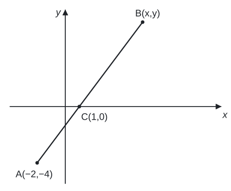

בסרטוט שלפניכם מערכת צירים בה מועבר הקטע AB.
נתון: BC = 2AC
על פי נתונים אלו ונתוני הסרטוט, מה שיעורי הנקודה B?

הצגת הפתרון
התשובה הסופיתתשובה (4)(7,8)
דרך הפתרון והסבר
הנקודות A, C ו־B על ישר אחד, ו־C נמצאת בין A ל־B.נחשב את ההתקדמות מ־A ל־C:בציר x: 1 − (−2) = 3בציר y: 0 − (−4) = 4נתון BC = 2AC: הקטע מ־C ל־B ארוך פי 2 מהקטע מ־A ל־C, באותו כיוון.לכן ההתקדמות מ־C ל־B היא פי 2: בציר x 2 · 3 = 6, ובציר y 2 · 4 = 8.השיעורים של B:x = 1 + 6 = 7y = 0 + 8 = 8לכן B(7,8).
💡 הלקח
נקודה על ישר ביחס נתון: ה"צעד" בכל ציר מוכפל ביחס – בשני הצירים.
🔁 דפוס חוזר: מערכת צירים מתרגמים לנקודות וצעדים בצירים; מרחק = פיתגורס. 📐 לדף הנוסחאות
מוקשים נפוצים
(4,8) מתקבלת אם מוסיפים את ההתקדמות פעם אחת בלבד בציר x – צריך להכפיל את שני הרכיבים.
נבדקהפתרון תואם את מפתח התשובות של הספר.